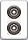
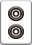
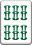
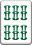
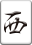
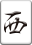
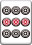
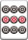
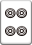
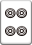

麻雀の役について
役とは、アガった時の手牌のパターンで点数を決める基準です。
役はたくさんあるので初心者は一翻役を覚えて実践を通して覚えていくとよいでしょう。
役に門前のみと書いてある役は、自分自身が鳴いた場合無効となる役です。
また、食い下がりと書いてある役は自分自身が鳴いた場合役数が少なくなることを意味しています。
役一覧には例となる手牌を記載していますので参考にしてください。
役とは、アガった時の手牌のパターンで点数を決める基準です。
役はたくさんあるので初心者は一翻役を覚えて実践を通して覚えていくとよいでしょう。
役に門前のみと書いてある役は、自分自身が鳴いた場合無効となる役です。
また、食い下がりと書いてある役は自分自身が鳴いた場合役数が少なくなることを意味しています。
役一覧には例となる手牌を記載していますので参考にしてください。
門前で聴牌した状態で捨牌するとき、リーチ宣言して1000点棒をリーチ棒として出すことで上がったときに成立します。リーチ後は待ちを変えることができません。リーチ棒はその局でアガった人が獲得し、流局時は次の局でアガった人が獲得します。
リーチ宣言をした後一巡以内に上がった場合に成立します。ポン・チー・カン（暗カンを含む）が行われると無効になります。
門前でツモアガリした場合に成立します。
2～8の数牌のみの場合に成立します。


 


 


面子が４つとも順子で、雀頭が役牌でなく、両面待ちの時に成立します。


 待ち牌:
待ち牌:
同じ順子が２組ある場合に成立します。


 

三元牌、自風、場風を総称して役牌と言います。1面子につき1翻となります。自風と場風が重なっている場合は連風牌と言い、1面子で2翻となります。
  ※場風：東
 ※場風：東
カンを行ったときにツモってくる嶺上牌でツモアガリした時に成立します。
他の人がポンした刻子にツモした牌を1枚加えてカン(小明カン)しようとした時、その牌でロンアガリする時に成立します。この時、カンは成立しないのでカンドラはめくりません。
局最後のツモ(海底)されたハイによりツモアガリした時に成立します。
局最後のツモ(海底)されたハイによりツモアガリした時に成立します。
その局のドラ、カンドラ、裏ドラ、赤ドラが手牌に含まれる時に翻が加算されます。
3種類の色（万子・索子・筒子）それぞれに、同じ数字の並びの順子がある場合に成立します。

 


同種（同色）の数牌で、123、456、789、の順子がある場合に成立します。


４つの面子と雀頭すべてにヤオ九牌（1・9と字牌）が含まれている場合に成立します。


対子が７組ある場合に成立します。同牌が４枚ある場合には成立しません。
４つの面子すべてが刻子（槓子）の場合に成立します。
ポン:
暗刻（暗槓）が３つある場合に成立します。ロンの場合、アガリ牌を含む刻子は暗刻とみなされないことに注意が必要です。
すべての牌がヤオ九牌（1・9と字牌）だけの場合に成立します。
ポン:
３種類の色（万子・索子・筒子）それぞれに、同じ数字の刻子（槓子）がある場合に成立します。
ポン:
槓子（暗刻・明刻いずれでも可）が３つある場合に成立します。
カン:
三元牌（白・發・中）のいずれか１つを雀頭とし、残り２種類を刻子（槓子）とした場合に成立します。

自分の最初の捨牌でリーチ宣言して、上がったときに成立します。
万子、索子、筒子のどれか一種類の牌と、字牌だけの場合に成立します。
４つのメンツと雀頭すべてに老頭牌（1・9）が含まれる場合に成立します。
同じ順子が２組という組み合わせが２つある場合に成立します。
万子、索子、筒子のどれか一種類の牌だけの場合に成立します。
13種類すべてのヤオ九牌（1・9と字牌）が最低１枚ずつあり、そのうちのどれか１種類が２枚ある場合に成立します。聴牌時に13種類すべてのヤオ九牌が１枚ずつあり、ヤオ九牌ならどれでも上がれる場合（13面待ち）はダブル役満となります。
暗刻（暗槓）が４つある場合に成立します．ロンの場合、アガリ牌を含む刻子は暗刻とみなされないことに注意が必要です。単騎待ちの場合はダブル役満となります。
三元牌（白・發・中）の３種類すべてが刻子（槓子）である場合に成立します。
ポン:
すべての牌が字牌である場合に成立します。
風牌（東・南・西・北）のうち３種が刻子（槓子）で、残りの１種が雀頭か刻子（槓子）である場合に成立します。
四喜和のうち、風牌（東・南・西・北）の４種類すべてが刻子（槓子）である場合に成立します。
索子の23468と字牌の發のみである場合に成立します。
すべての牌が老頭牌（1・9）だけである場合に成立します。
槓子（暗槓・明槓いずれでも可）が４つある場合に成立します。
カン:
万子、索子、筒子のどれか一種類の牌だけで、1112345678999の牌とさらに１枚1～9の牌を追加した牌形である場合に成立します。
親の配牌の時点で既にアガリ形になっている場合に成立します。
子の最初のツモでツモアガリした場合に成立します．そのツモの前にポン・チー・カン（暗カンを含む）が行われると無効になります。
局開始から流局まで、ヤオ九牌を捨て続けた場合に成立します．アガリ役ではなく、相手が満貫分の点数を失った後、通常通り流局の手順を行います．他の役とも一切複合しません．万一複数の人に同時に流し満貫が成立した場合は、相殺され誰も点数を失いません。
子が最初のツモより前に、他家の捨牌でロンアガリした場合に成立します．他の役とは複合せず、他に役がある場合、より高い方が適用されます。満貫、倍満、跳満、三倍満、役満などルールによって様々な扱いになります。
同色の刻子（槓子）３つが連番である場合に成立します。
同色の刻子（槓子）４つが連番である場合に成立します。
筒子のみの七対子ですべて連番になっている場合に成立します．1～7、2～8、3～9いずれの連番でも成立します。
８回以上連続して上がった場合に成立します．流局した場合は連荘してもアガリではないため、八連荘は無効になります。